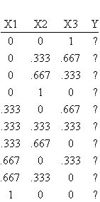
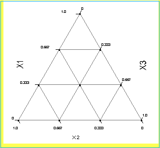
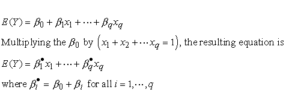
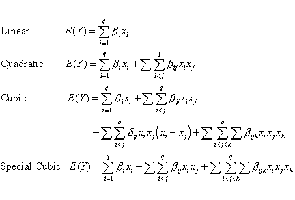
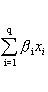
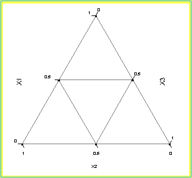
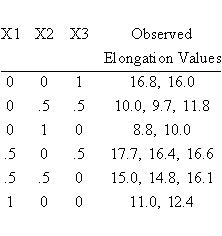
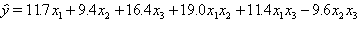
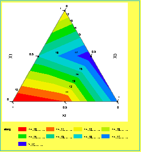

|
5.
Process Improvement
5.5. Advanced topics 5.5.6. What is a mixture design?
|
|||
| Definition of simplex-lattice points | A {q, m} simplex lattice design for q components consists of points defined by the following coordinate settings: the proportions assumed by each component take the m+1 equally spaced values from 0 to 1, | ||
| xi = 0, 1/m, 2/m, …, 1 for i = 1, 2, …,q | |||
| and all possible combinations (mixtures) of the proportions from this equation are used. | |||
| Except for the center, all design points are on the simplex boundaries | Note that the standard Simplex-Lattice and the Simplex-Centroid designs (described later) are boundary point designs; that is, with the exception of the overall centroid, all the design points are on the boundaries of the simplex. When one is interested in prediction in the interior, it is highly desirable to augment the simplex type designs with interior design points. | ||
| Consider a three component mixture where the number of equally spaced levels for each component is four (i.e. xi = 0, 0.333, 0.667, 1). In this example then q = 3 and m = 3. If one considers all possible blends of the three components with these proportions, then the {3, 3} simplex-lattice contains the 10 blending coordinates listed in the table below. The experimental region and the distribution of design runs over the simplex region is shown in the figure below. There are a total of 10 design runs for the {3, 3} simplex lattice design. | |||
| Example of a 3-component simplex lattice design |
 |
||
|
 FIGURE 5.9 Configuration of Design Runs for a {3,3} Simplex-Lattice Design |
|||
| The number of design points in the simplex-lattice is (q+m-1)!/m!(q-1)!. | |||
| Definition of canonical polynomial model used in mixture experiments | Now consider the form of the polynomial model that one might fit to the data from a mixture experiment. Due to the restriction x1 + x2 + ... + xq = 1, the form of the regression function that is fit to the data from mixture experiments is somewhat different than the traditional polynomial fit and is often referred to as the canonical polynomial. Its form is derived using the general form of the regression function that can be fit to data collected at the points of a {q, m} simplex-lattice design and substituting into this the dependence relationship among the xi terms. The number of terms in the {q, m} polynomial is (q+m-1)!/m!(q-1)!. This number is equal to the number of points that make up the associated {q, m} simplex-lattice design. | ||
| For example, the equation that can be fit to the points from a {q, m=1} simplex-lattice design is | |||
 |
|||
| This is called the canonical form of the first order mixture model. In general, the canonical forms of the mixture models (with the asterisks removed from the parameters) are as follows: | |||
| Summary of canonical mixture models |  |
||
| The terms in the canonical mixture polynomials have simple interpretations. Geometrically, the parameter i in the above equations represent the expected response to the pure mixture xi=1, xj=0, ij, and is the height of the mixture surface at the vertex xi=1. The portion of each of the above polynomials given by | |||
|
 |
|||
| is called the linear blending portion. When blending is strictly additive, then the linear model form above is an appropriate model. | |||
| Three component mixture example | The following example is from Cornell (1990) and consists of a three component mixture problem. The three components are Polyethylene (X1), polystyrene (X2), and polypropylene (X3) which are blended together to form fiber that will be spun into yarn. The product developers are only interested in the pure and binary blends of these three materials. The response variable of interest is yarn elongation in kilograms of force applied. A {3,2} simplex-lattice design is used to study the blending process. The simplex region and the six design runs are shown in the figure below. The figure was generated in JMP version 3.2. The design and the observed responses are listed in the table below. There were two replicate observations run at each of the pure blends. There were three replicate observations run at the binary blends. There are a total of 15 observations with six unique design runs. | ||
|
 FIGURE 5.10 Design Runs for the {3,2} Simplex-Lattice Yarn Elongation Problem |
|||
|
 |
|||
| The design runs listed in the above table are in standard order. The actual order of the 15 treatment runs was completely randomized. JMP 3.2 will be used to analyze the results. Since there are three levels of each of the three mixture components, a quadratic mixture model can be fit to the data. The output from the model fit is shown below. Note that there was no intercept fit in the model. To analyze the data in JMP, create a new table with one column corresponding to the observed elongation values. Select Fit Model and create the quadratic mixture model (this will look like the 'traditional' interactions regression model obtained from standard classical designs). Check the No Intercept box on the Fit Model screen. Click on Run Model. The output is shown below. | |||
| JMP analysis for the mixture model example |
Screening Fit Summary of Fit RSquare
0.951356
Source DF
Sum of Squares Mean Square
F Ratio
Prob > F < .0001
Term Estimate Std Error t Ratio Prob>|t| X1
11.7
0.603692 19.38
<.0001
|
||
| Under the parameter estimates section of the output are the individual t-tests for each of the parameters in the model. The three cross product terms are significant (X1*X2, X3*X1, X3*X2), indicating a significant quadratic fit. | |||
| The fitted quadratic mixture model is | |||
 |
|||
| Since b3 > b1 > b2, one can conclude that component 3 (polypropylene) produces yarn with the highest elongation. Additionally, since b12 and b13 are positive, blending components 1 and 2 or components 1 and 3 produce higher elongation values than would be expected just by averaging the elongations of the pure blends. This is an example of 'synergistic' blending effects. Components 2 and 3 have antagonistic blending effects because b23 is negative. | |||
| The figure below is the contour plot of the elongation values From the plot it can be seen that if maximum elongation is desired, a blend of components 1 and 3 should be chosen consisting of about 75% - 80% component 3 and 20% - 25% component 1. | |||
|
 FIGURE 5.11 Contour Plot of Predicted Elongation Values from {3,2} Simplex-Lattice Design |
|||